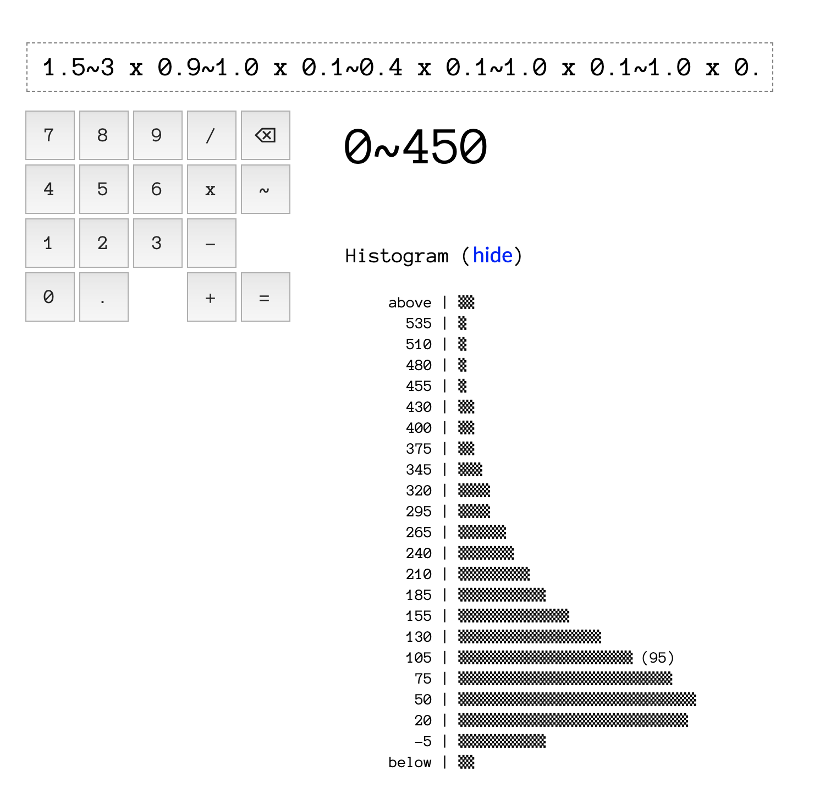

Hi, I'm Filip, and I'd like to introduce to you an early version of an uncertainty calculator.
Statistics are scary, but they don't need to be. If you allow me to simplify, the field of statistics is just saying: I'm not certain about these numbers, but I would still like to reason about them. Turns out we're unsure about a lot in our lives, but we can't just throw our arms in the air and say, well, I'm not a statistician.
The idea is simple: apart from regular numbers (like 4, 3.14 or 43942), you can also input ranges (like 4~6, 3.1~3.2 or 40000~45000). The character between the two extremes of the range is a tilde (~), a little wave symbol. You can find it on most keyboards, but for convenience, I also included it in the keypad above.
The range notation says the following to the calculator: I am not sure about the exact number here, but I am 95% sure it's somewhere in this range.
That's it. I thought long and hard about this, and I got to the conclusion that simplicity is key. Yes, we could have notations for different probability distributions, for different confidence levels, for truncations, for covariance, and so on. But that would also make it harder to understand. My assumption is that, if you're already cozy enough with things like confidence levels, you'll want to use something more sophisticated anyway. Here, we're interested in unlocking the power of statistics to a broad audience.
Reading the notation is easy: when you see 10~15, you say: "ten to fifteen".
People short-circuit when they encounter uncertainty. "Well, this is not certain, but that other thing also isn't, so it doesn't matter."
It often does!
"Well, I don't know this number exactly, so I'll just pick the first number that seems plausible and calculate with that."
Please don't! Our brains like the simplicity of single numbers, simple answers, but it's a trap. See below.
This example is inspired by a true story.
It is the year 2015 and our family has a dilemma. I get a chance to apply for a job in a different part of the world. My wife and I agree it would be pretty sweet to try living somewhere else for a few years, and we welcome the learning opportunity. On the other hand, we also have a new mortgage for our small flat in the city, and a one year old baby.

I would like to at least know if it's a good move, financially. Will we be losing money? If so, how quickly?
The problem is, nothing is certain. The company won't tell us the salary until after we go through most of the steps. I ask friends and random people on the internet about the cost of living in the area, but I get wildly different numbers. Even the tax rate isn't a simple percentage, but "depends".
At first, I go with a simple spreadsheet calculation. I pick a reasonably conservative number for each variable and do the math. $1,500 salary, 40% tax rate, $650 rent, $150 food, $30 baby stuff, $20 transportation.
1500 * 0.6 - 650 - 150 - 30 - 20 = 50
It looks like we'll be making +$50 each month, assuming we don't spend on anything extra. On one hand, that's cool: we're not considering the move to get rich. On the other hand, it's a little scary. What if I wasn't conservative enough with some of the numbers, and we realize too late that we're bankrupting our family?
I mean, it's good to know that one potential result is +$50 per month. But what about the other possible results?
There's a piece of monologue in a Czech theatrical comedy that I'm quite fond of, and it goes something like this: “According to our carbon dating analysis, this letter was written on January 21, 1842, plus-minus two thousand years.”

Unsure Calculator to the rescue!
It seems we have quite a few values in our little formula that are actually ranges. I'm not sure about the exact value, but I am pretty sure about the general range into which each value will fall.
Let's redo the calculation with ranges:
1400~1700 * 0.55~0.65 - 600~700 - 100~200 - 30 - 20 = -60~220
Now, I am 95% sure the real value of each item falls into the range. That means I am also 95% sure the real balance will fall into the -$60 to +$220 range. This is much more helpful than the one number before. For one thing, I now know that we could very well be losing money.
I also have the probability distribution and the percentiles.

The percentiles tell me that there's a 10% chance that our monthly balance will be -$8 or worse. (Because I see -$8 as the 10th percentile, which means that 10% of the outcomes will be lower than -$8. Conversely, 90% of the outcomes will be higher than -$8.) Now, our family can make a better informed decision. Are we willing to risk the 10% chance that we'll be losing money by this move? What about the 5% risk that we'll be losing $33 or more per month?
The answer to that will depend on the family and the situation. Without a kid and a mortgage, I was way more likely to take risks than I am today. On the other hand, if we didn't have backup plans, I'd be a lot more wary of the 10% chance.
In the end, we did it. And, in our case, it happened to pay back. The end.
This tool is meant for practical, everyday calculations. One example of such a use is in the previous section. But I can't pass by the opportunity to make an example that involves … aliens.
There is a famous formula in astrophysics called the Drake equation. It is an estimate of the number of civilizations in our galaxy with which communication might be possible.
For example, if we listen to radio signals from the stars, should we expect hundreds of civilizations trying to reach each other in our galaxy? Or is it more like thousands? Or zero? Is it realistic to expect we're alone here?
The Drake equation is actually very simple: it's just a multiplication of 7 numbers:
The original formula (written in 1961 by one Frank Drake) and its values went like this: in our galaxy, there is one star formed per year (R*), of which one fifth (fp) have about 3 planets (ne), of which 100% (fl) will eventually develop life, of which 100% (fi) will eventually become intelligent, of which 10% (fc) will be able to communicate, and will last 1 million years (L).
If you put all these numbers together, you'll get to the number 60,000. There should be 60 thousand civilization at any one time, trying to communicate with each other across the galaxy. Where are they?
As you might expect, there's been a lot of discussion about this equation since 1961. The estimated values for each of the parameters vary wildly between astrophysicists.
So, let's get the latest estimates, and put them into ranges. This gives us the following:
1.5~3 x 0.9~1.0 x 0.1~0.4 x 0.1~1.0 x 0.1~1.0 x 0.1~0.2 x 304~10000
If we put it into the Unsure Calculator, we get this:
So, we can expect anywhere between 0 and 450 civilizations. And the probability skews to the lower end (the histogram is wider towards the bottom).
Note: If you're curious why there is a negative number (-5) in the histogram, that's just an inevitable downside of the simplicity of the Unsure Calculator. Without further knowledge, the calculator cannot know that a negative number is impossible (in other words, you can't have -5 civilizations, for example).

Here are some ideas of how to use this calculator and its notation.
50000~80000 x 0.10~0.20 x 5~10 - 20000~500001000~1500 x 10~12 x (30~50 / 100)(3~5 * 5~10 * 51 * 7~15) / 60 - 10~155000 x (-2~5 / 100) x 5~10(10~30 / 100) * (0.1~1.0 / 100) * 100100 x tan(70 ~ 80)1000000 x (2~3 / 100) x (3~5 / 100) x (10~15)In the keypad above, you will only find +, -, x and /. But the calculator supports more than that, even in this early stage. You can calculate 2~3 ^ 4 (two to three, to the power of four), sqrt(10~12) (square root of ten to twelve) or sin(90~95) (sine of ninety to ninety five degrees).
This is a one man show. You should expect breakages. The formula parser is brittle and gives unhelpful error messages.
The computation is quite slow. In order to stay as flexible as possible, I'm using the Monte Carlo method. Which means the calculator is running about 250K AST-based computations for every calculation you put forth.
The UI is ugly, to say the least.
The only way to share formulas is to manually construct a URL. For example, sending someone to https://filiph.github.io/unsure/#f=20~30 will auto-compute 20~30 for them.
Range is always a normal distribution, with the lower number being two standard deviations below the mean, and the upper number two standard deviations above. Nothing fancier is possible, in terms of input probability distributions.
And of course, this is not a statistician's tool. Use the Unsure Calculator for back-of-a-napkin calculations. For anything more involved, use one of the free or paid statistical tools, a full programming environment, or hire a statistician.
I hope some people will find this tool useful, despite the limitations and despite its spartan design.
— Filip Hracek, March 2020